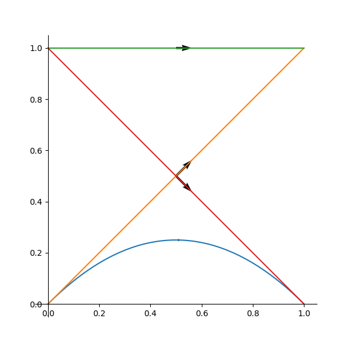
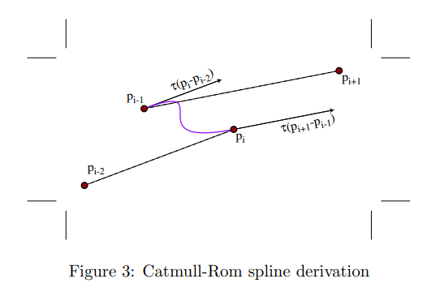

01插值研究
插值研究
本文章主要记录游戏开发中用到的一些插值技术，插值在游戏中主要都是用到一些运动效果过程中。例如最简单的线性插值
但插值相关的技术在更多方面也存在应用，例如曲线控制。此外运动也跟动力系统相关联。
目前看来运动变化主要有两种方式。
- 解析的插值方式控制。
- 微分方程构成的动力系统控制。
参考文献
- 《计算机动画 算法与技术》 清华大学出版社
- 《数值分析》 电子工业出版社
- 《计算机图形学与几何造型导论》 清华大学出版社
- 《3D数学基础 图形和游戏开发》（第2版） 清华大学出版社
插值方式
插值方式有很多种，最经典的就是Bezier曲线插值，以及Hermite曲线插值。Bezier曲线插值有4个点构成控制点，Hermite曲线插值则关注2个点，以及这两个点上的切线值。除此之外还有Catmull-Rom曲线插值和Lagrange插值。
在此做以简单的记录，对于插值部分的具体数学可以看《数值分析》或者《3D数学基础 图形和游戏开发》，这里也会相关引用一部分数学。
Lagrange插值
Lagrange插值实际就是线性插值的一个自然推广，其有很多理解角度。其一是从每段的线性插值得来。先假设有两个要插值拟合的点。我们要线性插值拟合这两个点，相当于值从在时间内从变化到。
那么自然有
那么自然如果有三个点时候我们可以在原来的线性插值基础上再进行一次线性插值。即有
来构造过3个点的曲线。可以简单看出在每个时刻都经过对应的点。
可以验证对于n个点同样方式可以构造出经过n个点的曲线。这个方式即差分方式的构造Lagrange插值即。
可以简单数学归纳验证，每一步都是经过
现在我们再从另一个角度来看，实际上我们将插值的系数抽象化，将每个点上的系数独立记为，即经过n个点的曲线最后会是
这个也称之为Lagrange基，可以注意到对于来说。只当是为1而其他值都为0。所以对于最后公式来说，可以确保在每个处经过。但值得注意的是，实际上为一个n-1次多项式，这实际上相当于过每个点的一个n阶多项式去拟合曲线。从Taylor展开我们可以知道，对于一个函数来说可以，用在处的导数来线性表示，即表示成的线性表示，这里也有类似含义，由构成的基来构成这个线性表示。从数值分析中可以看到，如果这n个点，实际由一个函数生成，那么这个Lagrange插值的误差跟Taylor展开的误差是非常类似的。
Hermite插值
在上述结构中，我们只关注了对于该时间点上值的关系，如果我们还关注其n阶导数，那么相应的多项式就会更加复杂。即，我们所求的多项式不经要在个时间点上满足的取值，还要满足么个点上的阶导数取值，即。这样的插值多项式称之为密切多项式。这个多项式的次数至少有次。
其中Hermit就是满足每个点上一阶导数也相等的插值多项式，即对每个点的情况的点。对于n个点的Hermite插值多项式公式非常复杂，在《数值分析》一书中有介绍。是一个基于Lagrange基上的复合多项式。在此就不再描述。
但是对于，即两个点的情况下，则有比较明确简单的描述。参考前面的文章记录，对于
四个条件确定的Hermite曲线由如下方式确定。
求解逆矩阵可得
当在任意时间段内变化的时候有
Bezier插值
先从构造的角度来生成Bezier曲线结构。在前面我们已经看到了Lagrange曲线，也看到其由连续两点之间的线性插值延展而来，实际上如果不要求经过中间点，而只经过起始点和终点，则存在另一种方式来插值表示，即我们在每一段区间上都以线性的方式移动，最后整体运动为每一段运动上的等时线性插值。
详细过程可以参考《计算机图形学与几何造型导论》
举例来说，假设现在有两个点，需要在时间内经过。那么显然有
当有三个点的时候，我们开始递归构造，但是与Lagrange不同的是，我们没有要求中间点在什么时候经过。所以采用如下的方式进行。
- 在每两个点之间在时间内线性插值移动形成对应移动的点。
- 针对每相邻的两段上移动的点再在时间内线性插值，直到最后只剩一段。
可以注意到与Langrange不同的是，不用在指定时间，经过中间点。而中间点主要起到一个控制作用，因为自底向上构造过程中的每个点实际上要插值中间点。而对应的构造方法简而言之，就是在每个线段上线性移动化在逐步插值构成。例如在之上进行操作有
即
根据公式我们可以看到自底向上的过程中实际上相当于反复乘以。那么整个过程中可以看到对于每个值其系数，是从底部到顶部的所有路径求和，而这个路径个数显然等同于二项式系数。也可以认为是从每个向上过程中，因为底部位置确定，所以有固定的选择向左或者向右的方式。
所以有递推公式
此就成为Bernstein基函数。是有n+1个点的Bezier曲线中跟第k个点关联的多项式系数。即有n+1个值的的Bezier函数有如下形式。
注意 虽然这个推导过程中使用的是点，一般情况下书籍上也都是以2维以上的情况下为例。但是根据上面的构造生成过程也可以发现，其实际上可以在一维情况下建立。只是构造的曲线形状是建立在坐标系上的。即形状注定是一个一维函数的形状，而不是一个二维平面的曲线。
将上述几种情况限制到3次多项式情况下，就是我们经常使用的插值函数了。但是对于各种情况我们要更加细节的分析明白其中的各种情况。
Bezier插值与Hermite关系
由于Hermite一般为2个点的3次曲线，所以Bezier曲线我们也关注3次曲线部分。即4个控制点的Bezier曲线。
我们关注时间段内一维情况下的变化，需要注意的是，此时Hermite曲线的语义依旧很明确，即在时取的值以及切线值。但是Bezier曲线，如果直接用构造点的方式，会发现并没有明确对应中间点的t坐标值。实际上这个时候的都会是在x轴上的一个点而已，运动起来，根据构造，其都会是沿着的方向去运动，而不会有往返震荡。
例如对于一维取值会有如下图像概念。
注意到整个曲线任然满足Bezier闭包条件，同时构造的边实际都只有一个前进方向。
- Bezier曲线
- Hermite曲线
对于Hermite曲线来说，显然对于时刻。对于Bezier曲线可以通过求导得到
故有
可以看到Bezier首个点的斜率只收前两个点的影响，末尾点的斜率只收后两个点的影响，这也是其一个重要特征，实际上可以相当，根据构造其开始阶段，收到最初两个点影响比例是100%，所以其斜率一定跟其有关。但可惜的是，并不完全是头两个点所形成的斜率（这里应该是，但实际有一个倍数关系。实际上对于任何维度都有当在时间变化时有:
可以看到一阶导数是第一个点的变化率的n倍数。从这个公式也可以观察到递归构造带来的影响。
同时这个公式就提示我们可以如下关联这两个曲线。例如当时，那么两条曲线完全一致。这也提示我们这两个曲线本质一致性。后面可以看到很多曲线编辑器都是用这种方式去编辑的，例如Catmull-rom曲线方式。
Catmull-rom
前面看到Bezier上曲线两端跟Hermite斜率上的关系。例如我们要插值两点，我们可以假象前后存在两个假象点。而对于我们要插值的点其斜率部分的值相当于。如下图。
那么此时，我们可以通过Herite矩阵简单得出此时的系数矩阵如下：
两个公式相乘可以的出矩阵，实际上就是矩阵的斜率值通过一些已经有的点给了出来。这里的可以理解维曲线的紧张程度。
这相当于一种通过前后点的比例关系来映射到系数上，进而控制曲线样式的方式。很多结构性的代码都是在曲线参数上又建立了一层参数映射来控制曲线。
此外我们可以设想一个工具来调整我们的曲线。就是在点上有一个明确的直线部分来标识斜率部分，如上图，则通过控制这条线的方向长度可以控制曲线的完全效果。这也是大多数引擎工具提供曲线控制的方式。
准确说，在一维情况下还有两种控制方式。
- 控制线单位化，只用其斜率表示该点一阶导数。
- 控制线权重化，根据上面的Bezier或者Catmull-Rom的方式，取这两个点差值的比例值来控制一阶导数。
高维情况下
在二维情况下，首先我们注意到两者就都有明确的语义概念。而且不再是以横轴为时间轴变化来演变。
随时间变化的运动效果
不同维度下的情况
上面讨论的都是一维情况下。实际上针对每种插值效果，可以自然推广到更高维度去。只需将替换为对应高维度的点即可。